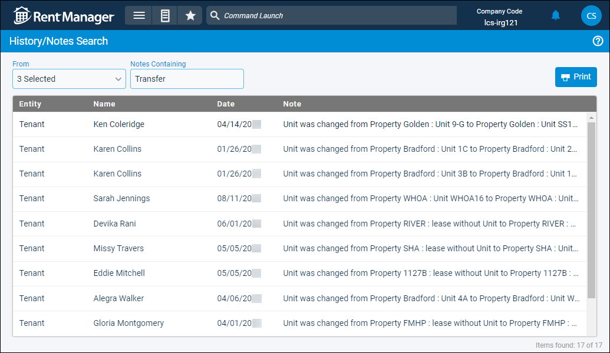

Source: https://rmxhelp.rentmanager.com/Topics/Express/CSH/History-Notes-Search.htm
History/Notes Search (Page)
The History/Notes Search page allows you to search for history/note items that contain specific words. For example, if you enter Transfer, all history/note items containing that word display. Additionally, you can select what types of history/note items should be returned.
Related Privileges
Privileges determine what search results are visible and what further actions you can take. Depending on your user privileges, you may be able to open a new page, drill down from the results to specific pages, and perform certain additional actions.
More Information
Only properties to which you have access display. Your access to properties can be managed from your user account or on the property's details page. For more information, refer to Limit Access to a Property.
To search for history/notes, go to  arrow_forward
arrow_forward  Search arrow_forward History/Notes.
Search arrow_forward History/Notes.

Filter Options
The following filter options are available on this page.
| Option | Description |
|---|---|
|
From |
The types of records (Property, Unit, Tenant, Estimate, Issue, etc.) to search. |
|
Notes Containing |
The desired search term or phrase (e.g., Transfer, Eviction, Transaction, and so on). |
Column Descriptions
The following columns display on the page.
| Column | Description |
|---|---|
|
Entity |
The type of record or account on which the history/note item is located. |
|
Name |
The name of the account on which the history/note item is located. |
|
Date |
The date the history/note item was created. |
|
Note |
The information to describe the history/note item. |